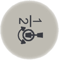

有三种方法选择轴进行微动控制。
使用 Toggle motion mode axis group（切换动作模式轴组）按钮。
使用 ABB 菜单上的 Jogging（微动控制）窗口。
使用 Quickset（快速设置） 菜单 Mechanical unit（机械装置），请参阅Quickset（快速设置）菜单，Mechanical unit（机械装置）。
在手动模式中，“快速设置”菜单按钮显示选择哪个轴组。
Joystick directions（控制杆方向）区域显示逐轴微动控制时，使用控制杆的方法是？请参阅轴和控制杆方向图示 。
以下操作需要采用逐轴微动控制：
将机械单元移出危险位置。
将机器人轴移出奇点。
定位轴进行微校。
按 Toggle motion mode axis group（切换动作模式轴组） 按钮切换动作模式。

使用此程序在 Jogging（微动控制）窗口中选择轴组。
操作 | |
1 | 在 ABB 菜单中，点击 Jogging（微动控制）。 |
2 | 点击 Motion Mode（动作模式）。 |
3 | 点击轴组 1-3 或 4-6，然后点击确定。 |
 | 小心 任何已安装工具的方向都会受到此步骤的影响。如果方向改变明显，则请在完成时执行 设置工具方向 中描述的步骤。 |